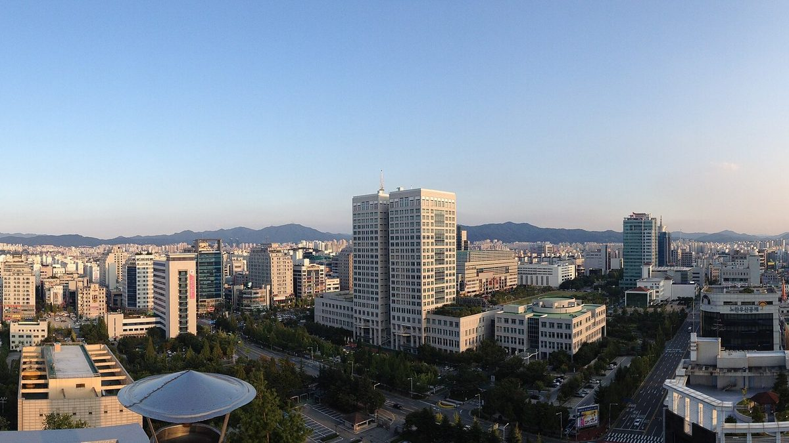

대전시의회, 햇빛소득마을 공모에 '법정동' 포함 건의안 채택…"리가 아니라 신청조차 못 해"

김미희 의원 대표 발의, 의원 19명 공동 발의…2027년 공모부터 동 지역 참여·평가 기준 정비 요구, 대전시는 4년간 시비 34억 원 '대전형 햇빛소득마을' 구상
대전시의회가 주민 협동조합이 태양광 발전 수익을 나누는 정부의 햇빛소득마을 공모에 동(洞) 지역 주민도 참여할 수 있게 해 달라는 건의안을 5일 채택했다. 시의회는 이날 제300회 제2차 정례회 제1차 본회의에서 김미희 의원(더불어민주당·유성구1)이 대표 발의하고 의원 19명이 함께 발의한 '햇빛소득마을 참여 확대를 위한 공모 기준 개선 촉구 건의안'을 의결했다. 행정안전부 공모는 참여 대상을 조례에 따른 '행정리'로 묶어 두고 있어, 읍·면·리 없이 동 단위 행정체계인 대전에서는 외곽의 농업·자연마을 공동체도 준비 정도를 평가받기 전에 신청 단계에서 막힌다는 것이 건의 이유다. 건의안은 2027년도 공모부터 법정동을 참여 대상에 넣고, 법정동 안 주민공동체의 범위와 주민동의 절차, 부지 확보 같은 참여·운영 기준과 사업 준비도를 반영한 평가 기준을 마련하며, 바뀐 기준과 신청 절차를 공모 전에 미리 알려 달라고 요구했다. 대전시는 2027년부터 2030년까지 시비 34억 원을 들여 해마다 2곳 이상 마을을 발굴·조성하는 '대전형 햇빛소득마을'을 구상하고 있으며, 이와 별도로 행안부에 동 지역 참여를 건의해 왔다. 김 의원은 행안부가 기준 조정을 검토하고 있다며 "국가가 지원해야 할 대상은 탄소중립과 마을 자립을 실현하려는 주민과 공동체"라고 말했다.
시민에너지 관점
햇빛소득마을을 2030년까지 3,000곳 넘게 만들겠다는 목표가 나왔지만, 행정구역이 '리'인지 '동'인지로 신청 자격을 가르면 같은 논밭을 끼고 사는 주민이 주소 때문에 문 앞에서 돌아서게 된다. 동 지역까지 열면 도시형 사업이 몰려 농촌 몫이 줄어든다는 걱정이 있을 수 있지만, 건의안이 요구한 것도 주민동의 절차와 사업 준비도로 걸러 내는 평가 기준이어서 행정구역 대신 공동체의 실체를 보자는 것이다. 지난달 국회 감사에서 동 지역 제외 문제가 제기된 뒤 제주에서도 동 지역 문의가 이어졌듯, 이 문제는 대전만의 일이 아니다. 행안부는 다음 공모 기준을 정할 때 법정동 주민공동체의 참여 요건을 분명히 하고, 지자체는 34억 원 같은 자체 계획을 주민 협동조합이 실제로 출자·운영하는 구조로 짜야 한다.
출처: 뉴스프리존 2026-11-05 김일환 원문 보기
출처: 뉴시스 2026-11-05 조명휘 원문 보기
창간 전 시험 발행 기사입니다.
大田市議会、「太陽光所得村」公募に「法定洞」を含めるよう求める建議案を採択…「『里』でないため申請すらできない」
キム・ミヒ議員が代表発議、議員19人が共同発議…2027年の公募から洞地域の参加と評価基準の整備を要求、大田市は4年間で市費34億ウォンの「大田型太陽光所得村」を構想
大田市議会は5日、住民協同組合が太陽光発電の収益を分け合う政府の「太陽光所得村（ヘッピッ・ソドゥク・マウル）」公募に、洞（ドン）地域の住民も参加できるよう求める建議案を採択した。市議会はこの日の第300回第2次定例会第1次本会議で、キム・ミヒ議員（共に民主党・儒城区1）が代表発議し、議員19人が共同発議した「太陽光所得村の参加拡大に向けた公募基準の改善を求める建議案」を議決した。行政安全部の公募は参加対象を条例に基づく「行政里」に限っており、邑・面・里がなく洞単位の行政体系をとる大田では、郊外の農業集落や自然集落の住民共同体も、準備の度合いを評価される前に申請の段階で門前払いになるというのが建議の理由だ。建議案は、2027年度の公募から法定洞を参加対象に加えること、法定洞内の住民共同体の範囲、住民同意の手続き、用地確保などの参加・運営基準と事業の準備度を反映した評価基準を設けること、変更した基準と申請手続きを公募前に周知することを求めた。大田市は2027年から2030年まで市費34億ウォンを投じて毎年2カ所以上の村を発掘・整備する「大田型太陽光所得村」を構想しており、これとは別に行政安全部に洞地域の参加を建議してきた。キム議員は行政安全部が基準の見直しを検討していると述べ、「国が支援すべき対象は、脱炭素と村の自立を実現しようとする住民と共同体だ」と語った。
市民エネルギーの視点
太陽光所得村を2030年までに3,000カ所以上つくるという目標が示されたが、行政区域が「里」か「洞」かで申請資格を分ければ、同じ田畑のそばで暮らす住民が住所のせいで門前で引き返すことになる。洞地域まで開けば都市型の事業が押し寄せ農村の取り分が減るとの懸念もありうるが、建議案が求めているのも住民同意の手続きと事業準備度でふるいにかける評価基準であり、行政区域ではなく共同体の実体を見ようというものだ。先月の国会監査で洞地域の除外が問題になった後、済州でも洞地域からの問い合わせが相次いだように、これは大田だけの問題ではない。行政安全部は次の公募基準を定める際に法定洞の住民共同体の参加要件を明確にし、自治体は34億ウォンのような独自計画を、住民協同組合が実際に出資・運営する仕組みとして設計すべきだ。
出典: ニュースフリーゾーン 2026-11-05 キム・イルファン 原文を読む
出典: ニューシス 2026-11-05 チョ・ミョンフィ 原文を読む
創刊前の試験発行記事です。
大田市议会通过建议案，要求"阳光收入村"公募纳入"法定洞"："不是'里'，连申请都不行"
金美熙议员领衔、19名议员联署…要求自2027年公募起允许洞地区参与并完善评审标准，大田市构想4年投入市财政34亿韩元打造"大田型阳光收入村"
韩国大田市议会5日通过建议案，要求让洞地区居民也能参加由居民合作社分享太阳能发电收益的政府"阳光收入村"公募。市议会当天在第300届第2次定例会第1次全体会议上，表决通过了由金美熙议员（共同民主党·儒城区第1选区）领衔、19名议员共同提出的《为扩大阳光收入村参与而改善公募标准的建议案》。行政安全部的公募把参与对象限定为依条例设立的"行政里"，而大田没有邑·面·里、实行以洞为单位的行政体系，因此即使是城郊的农业村落和自然村落居民共同体，也在接受准备程度评估之前就被挡在申请门外，这是提出建议的理由。建议案要求：自2027年度公募起把法定洞纳入参与对象；制定法定洞内居民共同体的范围、居民同意程序、用地保障等参与和运营标准，以及反映项目准备程度的评审标准；并在公募前提前公告调整后的标准和申请程序。大田市正在构想2027年至2030年投入市财政34亿韩元、每年发掘和建设2个以上村庄的"大田型阳光收入村"，并另行向行政安全部建议开放洞地区参与。金议员表示行政安全部正在研究调整标准，并说："国家应当支持的，是想要实现碳中和与村庄自立的居民和共同体。"
市民能源视角
政府已提出到2030年建成3,000个以上阳光收入村的目标，但若按行政区划是"里"还是"洞"来划定申请资格，守着同一片田地生活的居民就会因为地址不同而被拒之门外。有人可能担心一旦开放洞地区，城市型项目会蜂拥而至、挤占农村份额，但建议案要求的正是以居民同意程序和项目准备程度来筛选的评审标准，也就是看共同体的实质而不是行政区划。上月国会监查提出洞地区被排除的问题后，济州也接连出现洞地区的咨询，可见这并非大田一地的问题。行政安全部在制定下一轮公募标准时应明确法定洞居民共同体的参与条件，地方政府也应把34亿韩元这类自有计划设计成由居民合作社真正出资和运营的结构。
来源: 新闻自由区（NewsFreezone） 2026-11-05 金一焕 查看原文
来源: 纽西斯通讯社（Newsis） 2026-11-05 赵明辉 查看原文
本文为创刊前试发行文章。
Daejeon City Council adopts motion to open "sunshine income village" program to urban dong areas: "Shut out just because we're not a ri"
Moved by Councillor Kim Mi-hee with 19 co-sponsors, it asks that dong areas be eligible from the 2027 call with revised scoring rules; the city is planning a 3.4 billion won "Daejeon-style" village program over four years
Daejeon City Council on Nov. 5 adopted a motion asking the central government to let residents of urban "dong" districts take part in the Haetbit Sodeuk Maeul (sunshine income village) program, under which resident cooperatives share income from solar power. At the first plenary session of its 300th regular sitting, the council passed the "motion urging improved call criteria to widen participation in sunshine income villages," moved by Councillor Kim Mi-hee (Democratic Party, Yuseong-gu 1) with a total of 19 councillors as sponsors. The Ministry of the Interior and Safety's call limits eligibility to administrative "ri" villages set by local ordinance, so in Daejeon, which has no eup, myeon or ri and is organised entirely into dong, even farming and traditional village communities on the city's outskirts are blocked at the application stage before their readiness is assessed. The motion asks that legal dong be made eligible from the 2027 call, that rules be set for the scope of resident communities within a legal dong, resident consent procedures and site acquisition, along with scoring criteria that reflect project readiness, and that the revised criteria and procedures be announced before the call opens. Daejeon is planning a "Daejeon-style sunshine income village" program that would spend 3.4 billion won in city funds from 2027 to 2030 to find and build at least two villages a year, and has separately asked the ministry to admit dong areas. Kim said the ministry is reviewing an adjustment to the criteria, adding that "what the state should support is residents and communities trying to achieve carbon neutrality and village self-reliance."
Citizen Energy View
A target of more than 3,000 sunshine income villages by 2030 has been set, but drawing eligibility by whether an address is a "ri" or a "dong" turns away residents who farm the same fields simply because of where the boundary runs. Some may fear that opening the door to dong areas would let urban projects crowd out rural ones, yet the motion itself calls for scoring on resident consent and project readiness, judging the community's substance rather than its administrative label. After the exclusion of dong areas was raised at a National Assembly audit last month, inquiries followed from dong areas in Jeju as well, so this is not Daejeon's problem alone. The ministry should spell out eligibility for resident communities in legal dong when it sets the next call's criteria, and local governments should design plans such as Daejeon's 3.4 billion won scheme so that resident cooperatives actually invest in and run the plants.
Source: News Freezone 2026-11-05 Kim Il-hwan Read the original
Source: Newsis 2026-11-05 Cho Myung-hwi Read the original
This article was published during the trial period before launch.